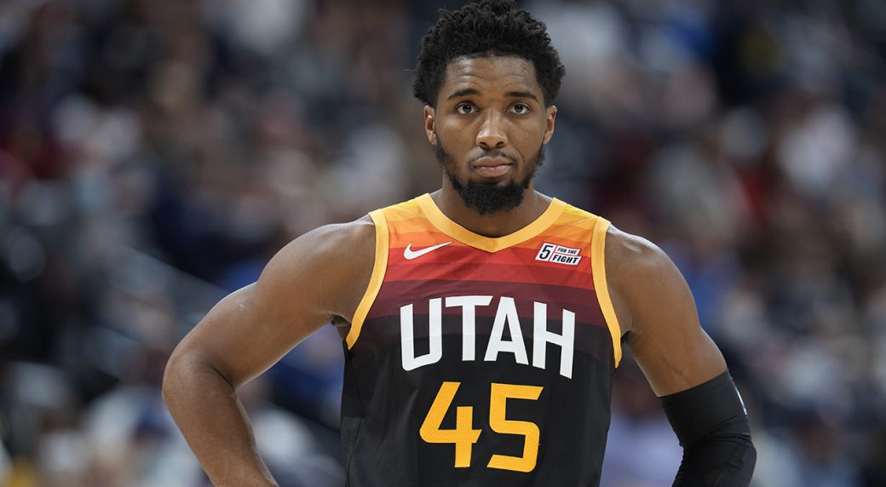
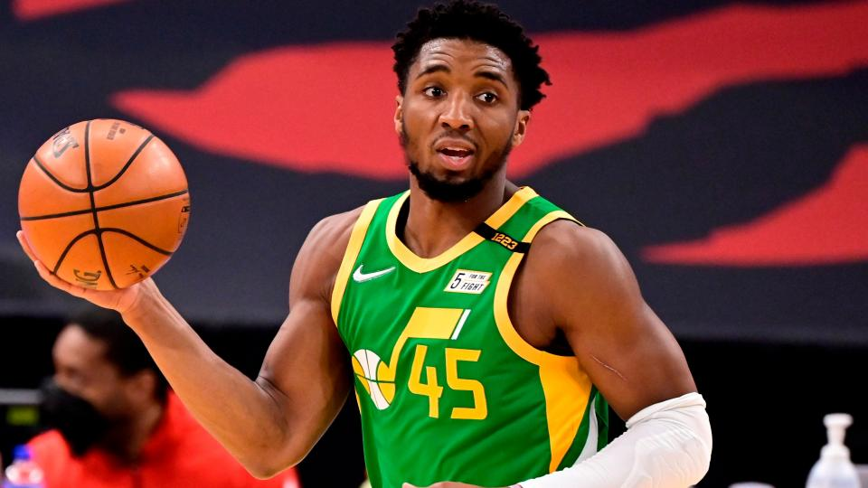

Após o Utah Jazz fechar as portas para uma saída de Donovan Mitchell no passado, franquias da liga entendem agora que a equipe está disposta a ouvir possíveis cenários de troca pelo armador, segundo fontes disseram à ESPN. O preço pode ser alto, mas, após o recente acordo com o Minnesota Timberwolves por Rudy Gobert, o Jazz não descarta novas investidas pelo All-Star.
Gerente-geral da franquia de Salt Lake City, Justin Zanik, abriu as portas à possibilidade em entrevista coletiva no último sábado, quando perguntado se Donovan Mitchell era considerado intocável nas discussões comerciais.
“A mudança é inevitável na NBA”, admitiu Zanik. “Não estou sendo enigmático ou qualquer coisa do tipo, mas Donovan está em nosso elenco e é uma parte muito, muito importante do que estamos tentando fazer. As coisas evoluem na NBA, então não poderia sentar aqui e dizem que alguém é [intocável]. Estamos tentando construir um time campeão, mas não há intenção [de trocar Mitchell], de forma alguma”.
O Jazz está aberto a negociações em todo o elenco, mas Mitchell é certamente o jogador mais valioso e cobiçado da organização.
O armador de 25 anos tem médias de 23,9 pontos e 4,5 assistências por jogo em cinco anos como atleta do Jazz, e foi All-Star nas últimas três temporadas. O armador ainda tem contrato para mais quatro anos na franquia, recebendo 134,9 milhões de dólares (R$ 731,3 milhões), após assinar uma extensão máxima em 2020.
O acordo prevê uma player option de 37,1 milhões de dólares (R$ 201 milhões) no ano final do contrato.
Utah chegou aos playoffs nas últimas seis temporadas, a atual sequência mais longa dentro da Conferência Oeste, mas não avançou além da segunda rodada durante esse período.
A organização passou por grandes mudanças após cair diante do Dallas Mavericks ainda na primeira rodada dos playoffs da última temporada, incluindo a demissão do técnico Quin Snyder, a contratação de Will Hardy para substituí-lo e trocas de Rudy Gobert e do ala titular Royce O'Neale.
“Esta temporada não foi muito divertida”, disse o CEO do Jazz, Danny Ainge. “O draft não foi divertido, nossa free agency não foi muito divertida. Estávamos acima do teto salarial, sem escolhas de draft, e nosso time perdeu na primeira rodada. Não foi divertido. Queremos que seja diversão para nossos torcedores e nossos jogadores, mas não tivemos muita flexibilidade para fazer nada nos últimos tempos”.
Ainge e Zanik concordaram com a avaliação de Gobert depois que ele foi negociado para Minnesota: a janela de vitórias em Utah havia fechado.
O triunfo do Jazz nesse acordo foi encabeçado por quatro futuras escolhas de primeira rodada, bem como a recente escolha de Walker Kessler. A franquia ainda recebeu uma pick de primeira rodada de 2023 do Brooklyn Nets no acordo com O'Neale.
 